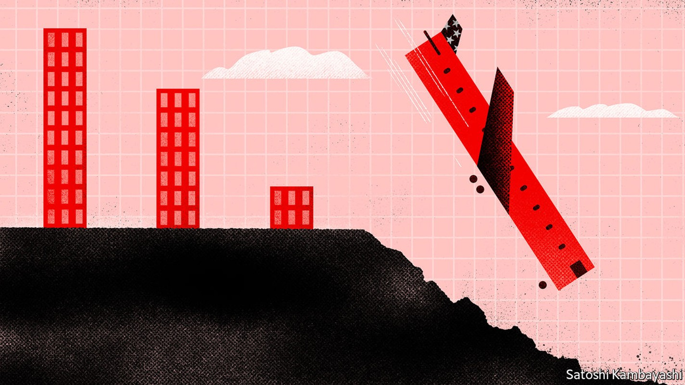
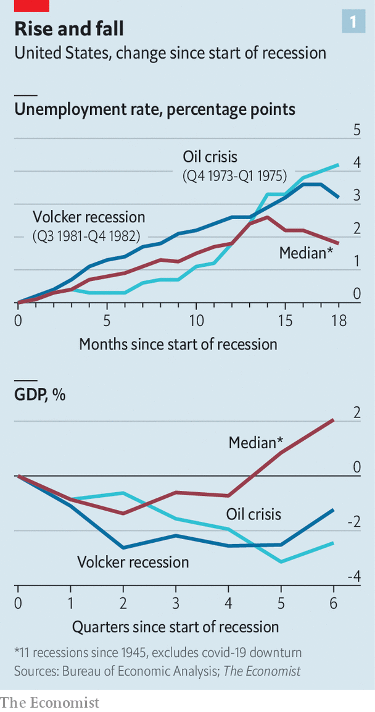
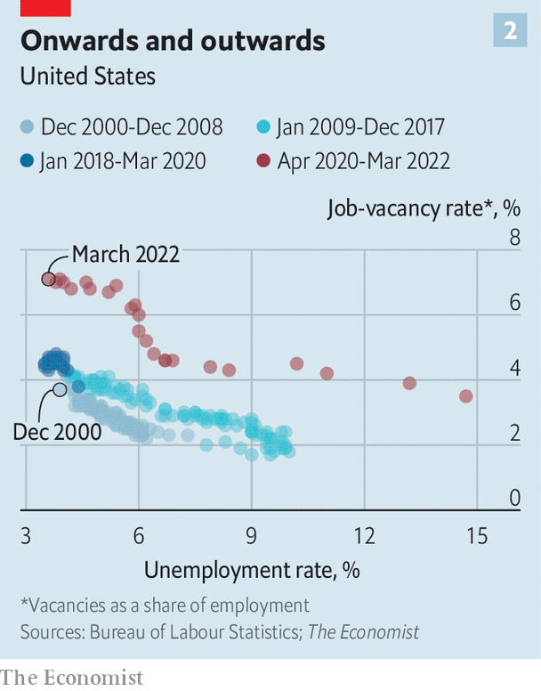
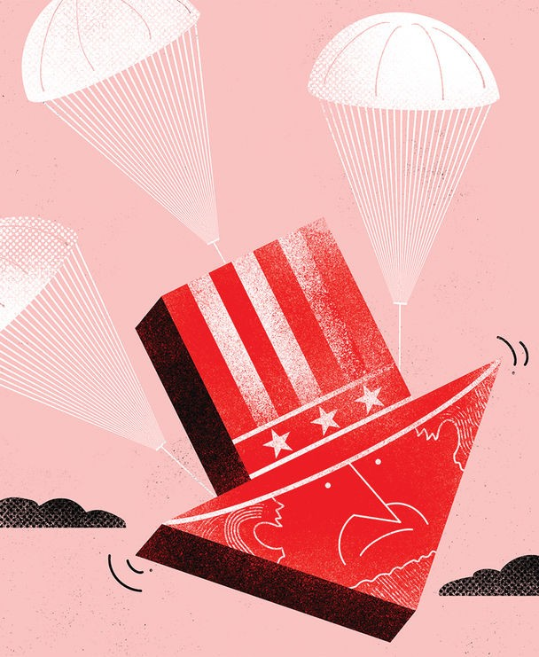

A mild downturn may be followed by a painfully prolonged recovery

These days it is hard to turn a corner without bumping into predictions of an American recession. Big banks, prominent economists and former officials are all saying that a downturn is a near certainty as the Federal Reserve wrestles inflation under control. Three-quarters of chief executives of Fortune 500 companies are braced for growth to go negative before the end of 2023. Bond yields and consumer surveys are flashing red. Google searches for “recession” are soaring.
Listen to this story.Enjoy more audio and podcasts on iOS or Android.
Listen to this story
Save time by listening to our audio articles as you multitask
The track record is certainly ominous. As Larry Summers, a former treasury secretary, has observed, whenever inflation has risen above 4% and unemployment has dipped below 4%—two thresholds that, when breached, indicate economic overheating—America has suffered a recession within two years. It is well across both thresholds now.
For much of last year the Fed and investors alike believed that inflation would fade as the pandemic subsided. No one believes that now. There is broad agreement that, supply snarls and energy-price surges notwithstanding, demand is also excessive, and that tighter monetary policy is needed to return it to a normal level. The question is how tight, and therefore how much the economy could suffer: the higher the Fed has to raise rates, the more punishing the downturn will be. Investors are pricing in pain, as indicated by the fall in stocks since the start of the year.
If America does slip into a recession, how might it play out? One way of trying to divine the path of a downturn is to consult history. America has suffered 12 recessions since 1945. Many observers point to similarities between today’s predicament and the early 1980s, when Paul Volcker’s Fed crushed inflation, causing a deep recession in the process. Others look at the downturn that followed the energy crises of the 1970s, echoed by the surge in oil and food prices today. Still others point to the dotcom bust in 2000, mirrored by the collapse in tech stocks this year.
But these parallels have serious flaws. Inflation is nowhere near as entrenched as at the start of Mr Volcker’s era. Growth is far less energy-intensive than in the 1970s. And the economy faces more complex crosswinds now than it did after the bust of 2000. The unusual nature of the deep covid-induced downturn in 2020, and the roaring recovery in 2021, when fiscal and monetary stimulus flooded the economy, limits the relevance of past episodes.
A better way to think about a recession, if it comes, is to look at America as it is today. Consider three different facets: the real economy, the financial system and the central bank. All three, working in concert, suggest that a recession would be relatively mild. Households and businesses’ balance-sheets are mostly strong. Risks in the financial system appear to be manageable. The Fed, for its part, has been too slow to respond to inflation, but the credibility it has built up over the past few decades means it can still fight an effective rearguard action. There is, however, a sting in the tail: when the recession ultimately ends, the consequences of the past few years of living dangerously with inflation may make for a sluggish recovery.
Start with the resilience of the real economy, which may well be the most important line of defence in a downturn. The general population is on a sound financial footing, a welcome change from the overextended consumers of the past. Household debt is about 75% of gdp, down from 100% on the eve of the global financial crisis of 2007-09. Even more striking is how much less Americans pay annually to service their debts. Because so many have shifted to cheaper mortgages as interest rates have fallen in recent years, their annual debt payments now add up to about 9% of disposable income, about the lowest since data were first collected in 1980.
Moreover, many households have larger-than-normal cash buffers thanks to the stimulus payments of the past two years, plus their reduced spending on travel, restaurants and the like at the height of the pandemic. Overall, Americans have excess savings of about $2trn (9% of gdp) compared with before covid. They have started to use some of this cash as living costs rise, but still retain a useful cushion.

In any recession one big concern is how many people will lose their jobs. Unemployment tends to rise during recessions: in the median post-1945 downturn in America, excluding the brief covid recession, the peak jobless rate rose by nearly three percentage points (see chart 1). A rise in unemployment seems more economically necessary today, as a way to relieve some of the upward pressure on wages and dampen inflation.
Could things play out differently, though? The labour market has, by some measures, never been so tight: a record 1.9 jobs are available for every unemployed person. This has fuelled optimism that companies could, in effect, cancel their job ads without firing people. Jerome Powell, chairman of the Fed, has expressed this hope. “There’s a path by which we would be able to moderate demand in the labour market and have vacancies go down without having unemployment going up,” he said on May 4th.
Hurting me softly
In practice, though, the labour market is unlikely to adjust so smoothly. Mr Summers has drawn attention to the concept of the Beveridge curve, which portrays a basic relationship: the more vacancies there are, the lower the unemployment rate. Since the onset of the pandemic the curve has shifted outwards (see chart 2). In other words, it now seems to require more vacancies to get to the same unemployment rates as in the past—an indication of faltering efficiency in the economy’s ability to match the right people with the right jobs. One possible explanation is that some people are still reluctant to work because of the health risks from covid. Another is regional variation: some states, like Utah and Nebraska, have giant needs for workers, but not enough people are willing to move to them.

Whatever the precise reason, the implication is that it is too optimistic to think that the Fed’s tightening can reduce vacancies without also reducing employment. Yet that does not mean that Mr Powell is all wrong. The Beveridge curve could also move back as the recovery progresses and more people re-enter the workforce. Say the unemployment rate increases by two percentage points instead of the nearly three points in the median recession. That would take the rate to about 5.5%, lower than the average of the past three decades. Though painful for those who end up on the dole, it would be a good outcome as far as recessions go. By contrast, 11% of Americans were out of work by the time Mr Volcker had finished tightening.
Even if most people are fairly well insulated from a recession, they are still likely to curtail their spending as the economy goes south. Belt-tightening would, in turn, translate into less revenue for businesses. A key question is how those lower earnings will interact with high debt levels: unlike households, companies have ramped up their borrowing over the past decade. Non-financial business debt stands at about 75% of gdp, not far from a record high.
Reassuringly, many companies sought to lock in rock-bottom rates during the pandemic. In 2021 companies reduced debt coming due this year by about 27%, or $250bn, mainly by refinancing their existing debt at lower rates and for longer durations. That makes them less sensitive to an increase in interest rates.
Less reassuringly, riskier companies also took advantage of easy money. Bonds that are rated bbb, the lowest rung of investment-grade debt, now account for a record 57% of the investment-grade bond market, up from 40% in 2007. When a recession strikes, the ratings on many of these bonds could slip a notch or two. And when bonds go from investment-grade to speculative, or junk, status, they become far less appealing for a universe of investors such as pension funds and insurance firms. That increases the chances of a flight to safety when the mood sours.
Even so, thanks to the starting point of low funding costs, there are limits to how bad things might get. In a pessimistic scenario—where a recession collides with higher input costs and rising interest rates—s&p, a rating agency, forecasts that about 6% of speculative-grade corporate bonds will go into default next year. That would be well up from the 1.5% rate now, but half the 12% rate in 2009. Intriguingly, the sector today holding the most low-quality debt is media and entertainment, featuring many leisure companies such as cruise lines. A recession would sap demand for their services. But as worries about covid recede, there is also a pent-up desire to get out and have fun again. The paradoxical result is that a swathe of low-rated companies may be positioned to fare better than most during a downturn.
How well fortified is the financial system, America’s second facet? Headlines in recent years about Basel 3 capital standards for banks may have caused more than a few pairs of eyes to glaze over. But these rules have served a purpose, forcing large financial firms to hold more capital and more liquid assets. Banks went into 2007 with core loss-absorbing equity worth about 8% of their risk-weighted assets. Today, it is more like 13%, a much plumper margin of safety. “A recession would not look like it did after the financial crisis. The system is just not levered like it was back then,” says Jay Bryson of Wells Fargo, a bank.
New threats have, inevitably, emerged. Prudential regulations have pushed risky activities into darker corners of the financial system. Non-bank lenders, for instance, issued about 70% of all mortgages last year, up from 30% a decade ago. Ideally, that would spread risks away from banks. But bank lending to these non-banks has also boomed, creating a web of opaque linkages. Insurers, hedge funds and family offices—in effect investment firms for the ultra-rich—have also taken on additional risks. They carry more debt than 15 years ago and are among the biggest investors in lower-rated corporate bonds.
Emblematic of the new kind of danger are collateralised loan obligations (clos). These are typically created by syndicating loans, pooling them and then dividing them into securities with different ratings depending on their payment profiles. The value of outstanding clos has reached about $850bn, making it the biggest securitised credit market in America. And high-risk leveraged loans form a growing share of clos, which are partly converted into investment-grade assets through the alchemy of securitisation. The parallels with the dodgy mortgage-backed securities of the financial crisis are obvious. Yet the similarities can also be overstated. The clo market is about half the size of the riskiest mortgage-securities market in the early 2000s. clos connect investors to a wide range of industries, not just property. They also tend to be longer-term investments, more resistant to market ups and downs.
Moreover, an important stabiliser for the financial system will be the relative solidity of America’s most important asset market: property. An exuberant surge in house prices over the past two years means a decline in sales and values may be on the cards. But property is also dramatically undersupplied. Sam Khater of Freddie Mac, a government-backed mortgage firm, estimates that America has a shortage of nearly 4m homes because of a slowdown in building over the past 15 years. It is far better for the financial system to enter a recession with a giant underinvestment backlog than with an overinvestment hangover, as was the case in 2007.
The final factor in assessing the impact of a recession is monetary policy. As of March the median forecast by members of the Fed’s rate-setting committee was that inflation would fall to close to 2% in 2024 without interest rates having to exceed 3%.
It seems a fair bet that rates will go quite a bit higher. James Bullard, the relatively hawkish president of the St Louis Fed, reckons that the central bank will need to increase rates to 3.5% by the end of this year. A simple rule of thumb, which combines the Fed’s desired real rate of interest and expected inflation, suggests even higher nominal rates may be needed. If the real neutral rate, which neither stimulates nor restrains growth, is 0.5%, then the Fed would probably want to hit a real rate of about 1.5% to rein in inflation. Add on short-term inflation expectations of 4% per year, as indicated by consumer surveys at present, and that suggests that the Fed may need to lift its nominal rate to 5.5%. “There is a substantially greater probability that we’ll need higher rates than the Fed now envisions or the market now predicts,” says Mr Summers.
Put differently, the Fed is embarking on a journey with a clear destination (low inflation), an obvious vehicle (interest rates) but hazy guesses about how to get there (how high rates must go). It will know the correct path only by moving forward and seeing how the economy reacts.
It has barely taken its first steps, raising rates by three-quarters of a percentage point over the past three months and setting out a plan for shrinking its assets. But it may be pleased with the results so far, clearly visible as financial markets rush to price in future tightening.

For all the Fed’s missteps of the past year, investors still have respect for it, a precious legacy of the past four decades, starting with Mr Volcker’s leadership, in which it kept a lid on inflation. Equities, which were looking bubbly, have tumbled in value. The impact on mortgages has been dramatic: 30-year fixed rates have risen above 5%, the highest in more than a decade. Yet credit spreads have widened only somewhat, an indication that lending markets are not too stressed. Taken together, this looks like an orderly sell-off and an early success for the Fed. Although inflation expectations, as measured by bond pricing, still point to annual inflation of 3% over the next five years, they have come down by about half a percentage point since March.
Mr Bullard’s case for optimism is that much of the work of taming inflation can be done by resetting expectations at a lower level. The real economy would then not need to bear the weight of the adjustment. The key objective for the Fed is therefore to prove to investors that its vows to quash inflation are credible. “It is more game theory and less econometrics,” he says. The Fed’s record over the past couple of months, since belatedly training its sights on inflation, opens up the possibility that it may be able to tame prices without a punishingly high increase in rates. That, in turn, would make for a lighter recession.
Why worry, then? For one thing, even a mild recession hurts. Imagine the unemployment rate does rise by two percentage points, as in our relatively hopeful scenario. That would imply job losses for about 3m Americans. The political consequences may be even more dramatic. The recession in 1990 shows up as a mere blip in economic trends, but it helped pave the way for Bill Clinton’s victory over George H.W. Bush. A mild recession in 2023 could put paid to Joe Biden’s beleaguered presidency, perhaps helping usher Donald Trump back into the White House.
This will make the policy response to a looming recession much more controversial. If, as expected, the Republicans seize control of Congress from the Democrats in mid-term elections this November, there would be little chance of a muscular fiscal stimulus as growth slows. Republicans would see little reason to bail out Mr Biden, especially if the financial system holds up.
The task of easing would fall squarely on the Fed. But having just fought to contain an overheating economy and bring inflation to heel, the central bank would be queasy about revving up demand too much. And if the current cycle of rate increases stops at a low level, the Fed would not have much room to cut rates anyway. The next step would be once again to unleash quantitative easing (ie, purchasing assets such as government bonds in order to lower longer-term interest rates). It would, however, be fearful of the optics of “printing money” so soon after whipping inflation and just as a contentious election campaign gets under way.
The upshot is that policymakers are likely to have a limited arsenal if the next recession is just round the corner. Given the strengths of the economy today—flush consumers, solid businesses and safe banks—the next downturn ought to be mild. But even a mild recession must be followed by an upturn for the economy to return to full health. And with fiscal policy on the sidelines and monetary policy badly hobbled, the chances are that America would face a painfully slow recovery. After two years of focusing on high inflation, low growth may move back to centre-stage as the economy’s principal problem. ■
For more expert analysis of the biggest stories in economics, business and markets, sign up to Money Talks, our weekly newsletter.